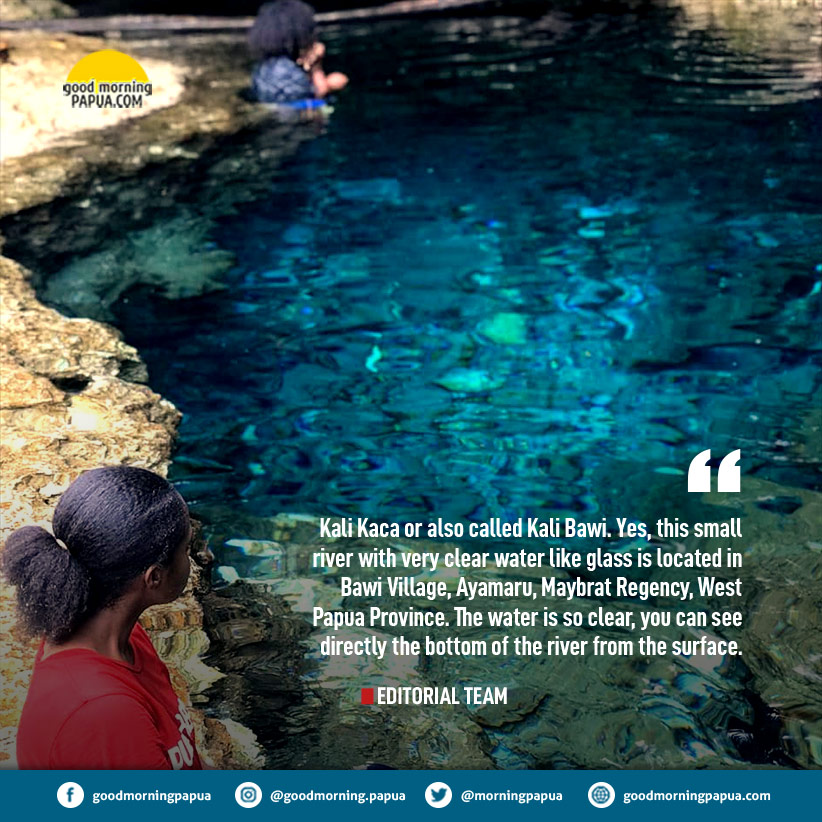

Tugas Ke-4
Nama Lengkap : Margareta Fidelina Wursok
NIM : 202055202004

Deskripsi :
Kali Kaca, a Hidden Tourist Paradise in Maybrat, West Papua.
Kali Kaca atau disebut juga Kali Bawi. Ya, sungai kecil dengan air yang sangat jernih seperti kaca ini terletak di Desa Bawi, Ayamaru, Kabupaten Maybrat, Provinsi Papua Barat. Airnya begitu jernih, Anda bisa melihat langsung dasar sungai dari permukaan.